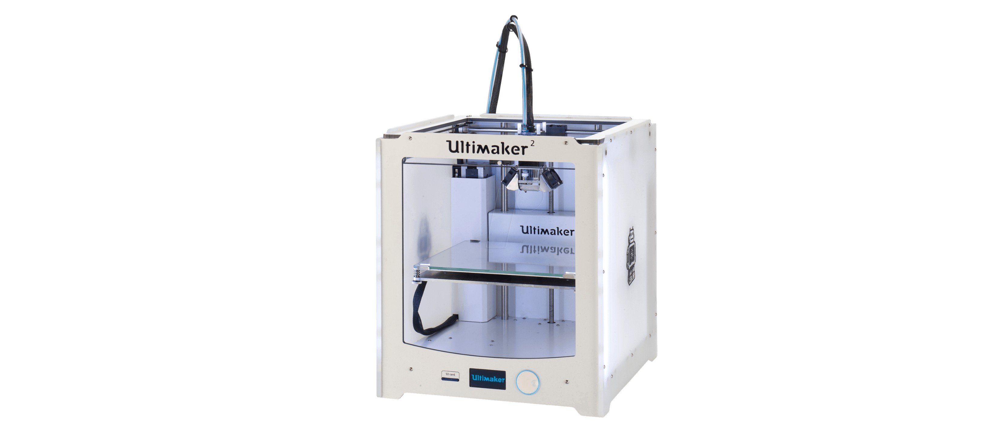
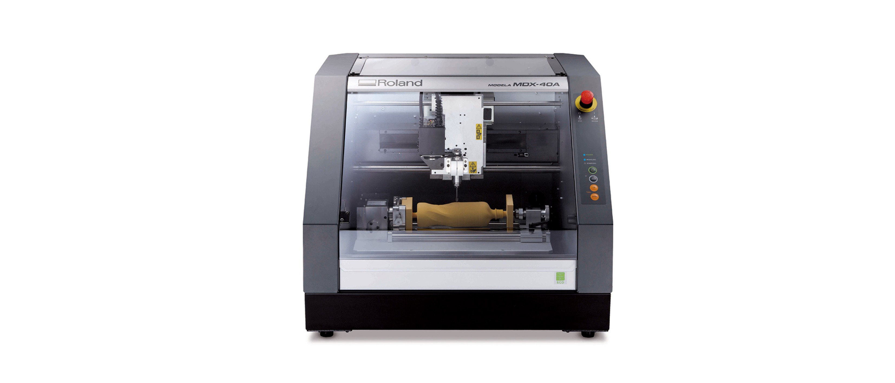
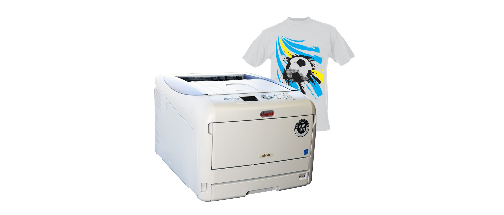

Búnaður/Leiðbeiningar
Þrívíddarprentarar
Prusa MK3S+

Nýjasti prentarinn í Fab Lab Akureyri en hann þykir með þeim traustari á hinum almenna markaði.
Ultimaker 2+

Tvö stykki af þessum eldri en seigu prenturum.
Stór fræsibekkur
ShopBot

Stóri fræsinn okkar. Hentar vel til fræsingar í allar gerðir af viði, plasti, frauði, expoxy og ál.
Litlir fræsarar
Wegstr

Nettir og þægilegir fræsarar sem henta einstaklega vel fyrir rafrásagerð.
Roland

Fjölhæfari vél sem getur fræst á fjöbreyttari máta sem, t.d. til mótagerðar með vaxi og einnig hægt er að nota hana til 2.5D skönnunar
Laserskurður
Epilog

Tvær laserskurðarvélar, 40W og 60W. Með þeim er hægt að skera og merkja margskonar efni. Vélarnar skera og merkja MDF, krossvið, leður, akrýlplast(plexýgler). Einnig merkja þær í gler, stein og á málma.
Stafræn útsaumsvél
Husqvarna

Tölvustýrð útsaumsvél sem á auðvelt með að sauma í öll helstu fataefni. Vélin virkar einnig sem hefðbundin saumavél.
Litaprentari fyrir textíl
iColor 600

Prentar á sérstakan pappír til að hitapressa á textíl.
Vínylskeri
Roland

Skemmtilegur vínylskeri sem getur skorið út bæði hefðbundna límmiða, sandblástursfilmur og fatafilmur. Fatafilmurnar er hægt að líma við föt með hitapressu.
Hitapressun
Secabo C5

Hitapressa til að merkja föt
Vacuum formun
Mayku Multiplier

Nýjasta græjan á svæðinu! Hægt að búa til mót úr plastefnum og sílikoni.
Annar búnaður
Auk þeirra ofantalinna tækja, er smiðjan útbúið öllum helstu tækjum og verkfærum sem þarf til margskonar verka, svo sem:
- Almenn handverkfæri eins og skrúfjárn, hamar, dúkahnífar, tangir og þjalir.
- Stillanlegir spennugjafar
- Sveiflusjá
- Lóðboltar, tin og tinsugur.